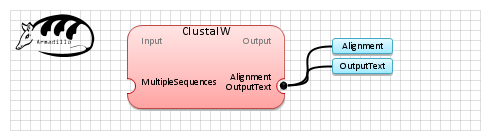

| Name | ClustalW | |
| View |  | |
| Publication(s) | Thompson JD, Higgins DG, Gibson TJ.
(1994). CLUSTAL W: improving the sensitivity of progressive multiple sequence alignment through sequence weighting, position-specific gap penalties and weight matrix choice. Nucleic Acids Res., 22, 4673-4680. | |
| Website | http://www.clustal.org/ | |
| Description | This is a general purpose multiple sequence alignment program for DNA or proteins. | |
| Input (1) |
MultipleSequences | |
| Output (2) |
Alignment OutputText | |
| Related (4) | ClustalW ClustalW2 Kalign Muscle |